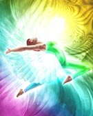

Se considera metafísico todo aquello que está más allá de lo físico, más
allá de la naturaleza concreta. Básicamente la metafísica trata temas
filosóficos y espirituales, leyes universales y los mundos invisibles.
Aristóteles tenía dentro de sus tratados, los del alma los cuales no había
rotulado de ninguna forma, pero los guardaba al lado de los de física.
Cuando sus discípulos y alumnos querían ver ese material, él les decía son
aquellos que están al lado de los de física, más allá de los de física.
Aristóteles escribió una obra de 14 papiros en rollo, los cuales son
netamente filosóficos, esotéricos.
Desde ese tiempo hasta la actualidad la metafísica representa el nombre de
la sabiduría más elevada que es la del alma. Conocimientos esenciales del
ser que no pueden ser investigados científicamente, son tratados por la
metafísica. Los seres humanos tenemos una predisposición natural para
investigar o querer saber acerca de aquello que está más allá de lo visible.
El ser humano es un ser metafísico y se lo comienza a considerar de este
modo a partir de los pensadores árabes que hicieron de la metafísica una
disciplina filosófica que tiene como objetivo al ser en cuanto al ser
mismo. Es a partir de entonces que la metafísica pasa a ser la más alta
disciplina ...
filosófica, y así la recibe la modernidad. Su objetivo es lograr
una comprensión teórica de la esencia y de los principios últimos generales
más elementales del ser. Lo que en este caso significa “ser” se entiende de
diferentes maneras, por lo que el ámbito de estudio es amplísimo. Las dos
preguntas fundamentales de la metafísica son:
1. ¿Por qué existe algo, y no más bien nada?
2. ¿En qué consiste la realidad de lo real?
3. ¿Qué es el ser considerado en sí mismo?
No sólo se pregunta entonces por el origen, sino también por la
constitución y la interrelación de todo lo que es, es decir, de la realidad
en su totalidad. La metafísica trata sobre el ser, las realidades, la nada,
la mente, la naturaleza, la divinidad, la verdad, la libertad, los cambios,
el todo, las dimensiones, los planos, micro y macrocosmos y sus relaciones,
etc.
La metafísica afirma que la mente puede ser usada para orientar la vida
constructivamente y enseña a vivir en correlación con los seres de luz de
otras dimensiones que nos apoyan en el proceso evolutivo del ser.
A través de la investigación en el conocimiento espiritual podemos
comprender que los universos funcionan de acuerdo a ciertas leyes y
principios: “los principios de la verdad son siete: el que comprenda esto
perfectamente poseerá la clave mágica ante la cual todas las puertas del
templo se abrirán de par en par” Hermes Trismegisto El Kibalyon.
Principio de mentalismo
Dios creó al mundo con la mente, por lo tanto Él es mente, y no puede crear
otra cosa que mente. La semilla del naranjo da naranjas.
Todo lo creado está involucrado en todo, comprobamos que el todo, el
absoluto, el uno, está involucrado con todas las manifestaciones de vida
existentes.
Principio de correspondencia
Todo tiene que ver con todo. Como es arriba es abajo, así como es abajo es
arriba. Todo lo manifestado en el mundo material es una copia de aquello
que está en el mundo de las ideas.
Principio de vibración
Todo en el universo vibra. El pensamiento positivo vibra más alto que el
negativo. Los estados de ánimo vibran y lanzan al espacio ondas de color y
sonido. Todos los estados mentales vibran y se lanzan al espacio, e
interactúan con el resto de la creación.
Principio de polaridad
En el universo creado todo tiene su polaridad, lo opuesto, lo semejante.
Los opuestos esencialmente son lo mismo. Por eso Dios es padre y madre,
tiene las polaridades masculina y femenina, y luego se transforma en
androgino que contienen ambas.
Principio de Ritmo
El universo vibra y tiene el movimiento de la vida que pulsa siguiendo un
ritmo, lo que le da un orden para su manifestación. Al haber vibración, hay
ritmo, al haber ritmo hay armonía.
Principio de Causa y Efecto
Todo lo que ocurre viene de una causa, todo tiene causa y efecto, las
situaciones, las personas, vibran en la ley de causa y efecto. No hay causa
sin efecto ni efecto sin causa.
Principio de generación
Todo lo que existe está ligado al principio de polaridad, al masculino y
femenino complementándose, así se produce la generación.
Dentro de los estudios metafísicos vibramos en estas 7 leyes o principios
universales y como antes mencioné la energía se transmite y manifiesta en
forma de ondas de sonido y color, es por eso que dentro de la metafísica
existe el conocimiento de los 7 rayos de color. Cada color proviene de una
emanación de Dios.
Cada color nos nutre de virtudes y capacidades, veamos cada uno de ellos y
el arcángel que está asociado a esa vibración.
Rayo Azul
El color azul nos brinda voluntad, fe, paz, felicidad y equilibrio. Tiene
el poder de protección, y la fuerza.
Arcángel Miguel.
Rayo Amarillo
El color amarillo dorado nos brinda inteligencia, sabiduría e iluminación.
Arcángel Jofiel.
Rayo Rosa
El color rosa nos brinda, amor incondicional, belleza, amor divino,
tolerancia, alegría.
Arcángel Chamuel.
Rayo Blanco
El color blanco nos brinda, pureza, resurrección, paz, arte.
Arcángel Gabriel.
Rayo Verde
El color verde nos brinda, curación, verdad, consagración.
Arcángel Rafael.
Rayo Oro Rubí
El color oro rubí, naranja, nos brinda, abundancia, providencia,
protección, energía.
Arcángel Uriel.
Rayo Violeta
El color violeta nos brinda, compasión, transformación, misericordia,
perdón, transmutación, prudencia.
Arcángel Zadkiel.
La metafísica usa mucho las afirmaciones mentales para lograr una
manifestación armoniosa, les entrego algunas de ellas.
El Cristo que hay en mí, bendice, reconoce y ama al Cristo que hay en ti.
Yo soy la paz en toda situación.
Yo soy la Justicia Divina, manifestándose en la luz azul, disolviendo toda
injusticia humana en la poderosa voluntad de Dios.
Yo soy la Verdad de la luz verde en acción, precipitando salud, y provisión
sobre todo ser.
Yo soy el poder y la presencia consumidora de todo temor, duda y confusión,
que pueda haber en mi mente. Yo soy la iluminación visible en mi ser ahora.
Avanzaré con fe perfecta, confiando en el poder del bien omnipresente, el
cual me otorgará cuanto necesite, en el momento perfecto.
Yo soy el amor, la sabiduría y el poder con su inteligencia activa, lo que
estará actuando en todo lo que piense y haga hoy.
Yo soy la mano de Dios en acción.
A continuación siete acciones mágicas
Mover
Mueve tu cuerpo, las cosas de tu casa, muevete por lugares diferentes.
Mueve los puntos de encaje, pensamientos y acciones. Solo el movimiento de
una pequeña piedra puede hacer el milagro que esperas.
Tocar
Toca tu cuerpo, acarícialo, abrázalo. Abraza a la gente a los animales, a
los árboles, a las cosas. Toca y siente la humedad, la sequía, conoce a
través del tocar.
Escuchar
Escucha todo a tu alrededor, escucha hasta los aparentes silencios. Escucha
tu voz interior. Escucha la caricia del viento, el canto de los pájaros.
Escucha más que con tus oídos, con el corazón, con el alma.
Sentir
Siente todo, el placer, el dolor, el calor, el frío. Siente hasta el
extremo de la locura que es cordura, siente hasta explotar.
Confiar
Entrega y confía, abraza las dudas con alegría y confía. Confía en tu
interior que hará que tomes las decisiones perfectas en las cuales no hay
error.
Reunirse
Reúnete con gente, con otros seres. Permite que otros seres gocen de tu
integridad, de tu totalidad, de tu belleza completa y disfruta de todos
esos seres por igual.
Recibir
Por una vez deja de dar, dar y dar, y permite que te den. Ábrete a recibir
es una forma de amarte. Acepta halagos, abrazos, miradas, demostraciones de
afecto, practica la humildad de recibir. Recuerda que das y recibes.
Algunas ramas de la metafísica desarrollan el conocimiento del contacto con
maestros ascendidos los cuales están en colaboración continua con los
humanos. Los maestros ascendidos son seres que ya transitaron una vida
humana y lograron la iluminación, y en este tiempo de transformación
planetaria asisten en servicio para la mayor iluminación de la Tierra.
Algunos de ellos son:
Maestro Kutumi
Maestra Kuan Yin
Maestra Lady Venus
Maestro Victory
Maestro Pablo el Veneciano
Maestra Lady Rowena
Maestro el Morya